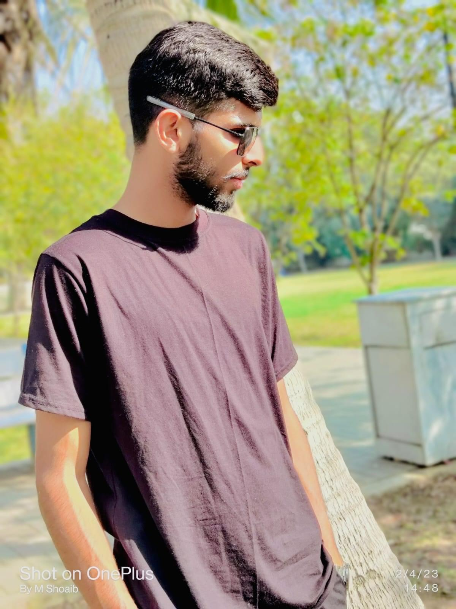

Highly skilled and disciplined professional with five years of experience serving as a gunner in the Pakistan Navy. Adept at operating and maintaining a variety of weapon systems, ensuring optimal performance in high-stakes environments. Demonstrated ability to work effectively under pressure while prioritizing safety and mission objectives. Recognized for strong teamwork and leadership skills, with a commitment to excellence and strategic execution. Seeking to leverage military expertise and hands-on experience in new challenges to drive organizational success.
Education
Middle School Diploma
Govt. Elementary School Dargahi Shah
[2015]
High School Diploma
Govt. High School Wasu Astana
[2018]
Bachelor's Degree
Govt. Degree College 18 Hazari
[2020]
Highly skilled and disciplined professional with five years of experience serving as a gunner in the Pakistan Navy. Adept at operating and maintaining a variety of weapon systems, ensuring optimal performance in high-stakes environments. Demonstrated ability to work effectively under pressure while prioritizing safety and mission objectives. Recognized for strong teamwork and leadership skills, with a commitment to excellence and strategic execution. Seeking to leverage military expertise and hands-on experience in new challenges to drive organizational success.
Recognized as an exceptional swimmer with a strong competitive background, demonstrating both physical fitness and discipline. Proven expertise as a proficient gunner, consistently delivering precise and effective performance in high-pressure situations. Honored to perform guard of honor duties for the President over three years, showcasing a commitment to excellence, attention to detail, and strong ceremonial skills. These experiences reflect a blend of teamwork, leadership, and a dedication to service.
